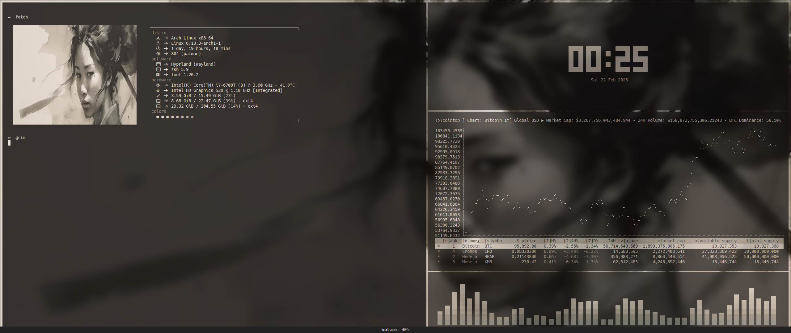

fvb /blog
sort of a blog
just some things i do or think
-_-
Thu 19 Jun 2025 02:48
'how you do one thing is how you do everything'
- stoic trader -
---
Sat 22 Feb 2025 00:32
this is how we do it
---
Sat 01 Feb 2025 03:34
looking at you

---
Thu 19 Dec 2024 10:06
great trading community
---
Thu 05 Dec 2024 08:09
well that's nice .. now 10x again
---
Fri 10 May 2024 21:41
testing one two testing testing one two .. looks like it's working .. 😎
---
Wed 08 May 2024 21:30
new funded account new(ish) setups new trading(view) screen layout
---
Tue 05 Mar 2024 18:00
this is how we do it
---
Wed 03 Jan 2024 13:51
every week every day and it won't stop
---
Sat 02 Sep 2023 21:03
'under observation we act less free which means we effectively are less free'
- edward snowden -
---
Sat 17 Dec 2022 01:15
'the great man .. is colder, harder, less hesitating, and without respect and without
the fear of 'opinion'; he lacks the virtues that accompany respect and 'respectability',
and altogether everything that is the 'virtue of the herd'. if he cannot lead he
goes alone. he knows he is incommunicable: he finds it tasteless to be familiar.
when not speaking to himself he wears a mask. there is a solitude within him that
is inaccessible to praise or blame.'
– friedrich nietzsche, the will to power -
---
Sat 05 Nov 2022 02:21
beautiful 34 keys keyboard 'ferris sweep' less is more
---
Thu 06 Oct 2022 23:00
'software is like sex it's better when it's free'
- linus torvalds -
---
Tue 04 Oct 2022 23:26
'stop being poor'
- a rich girl -
---
Wed 03 Aug 2022 23:50
every day every week and it won't stop
---
Wed 13 Jul 2022 23:56
trading is the hardest way to make easy money
---
Fri 01 Apr 2022 20:38
'april fools is dead because every joke is now reality'
- ben shapiro -
---
Sat 19 Feb 2022 02:53
'the market moves money from the hands of the impatient to the patient'
- some billionaire -
---
Fri 18 Feb 2022 14:15
eurusd short entry this is the way
---
Mon 07 Feb 2022 19:46
'ik heb het nog nooit gedaan dus ik denk dat ik het wel kan'
- pippi langkous -
---
Sat 22 Jan 2022 20:45
rice
---
Wed 19 Jan 2022 23:21
trading season is about to start again
---
Thu 02 Dec 2021 02:52
insomnia
---
Tue 23 Nov 2021 05:46
market structure
it is what it is until it isn't
---
Sun 07 Nov 2021 07:07
a 'zettel' is a sort of short knowledge note
my zettels on github
---
Fri 22 Oct 2021 03:39
i need a new spine this one is broken
---
Thu 23 Sep 2021 22:31
daytrading is not every day trading
---
Sun 12 Sep 2021 08:00
‘als ik loop voel ik me beroerd maar als ik niet loop nog beroerder’
- ron teunisse -
---
Sat 04 Sep 2021 22:09
rustig bewegen op geleide pijn
so no running for you
---
Sat 28 Aug 2021 02:18
rugwervel gebroken tgv val twee weken terug
leven nu verplicht wel heel erg relaxed
---
Sat 21 Aug 2021 18:09
HODL
---
Fri 16 Jul 2021 14:54
one short one long and done for the week a very nice 15% roi this week
---
Fri 16 Jul 2021 13:07
i know it's friday but that's a very nice eurusd setup i think i'll take it
---
Fri 16 Jul 2021 12:13
i like linux 'cause of the pinguin what can i say i just love pinguins
---
Tue 13 Jul 2021 14:54
done salmon on the bread and butter wonder what's for dinner tomorrow
---
Mon 12 Jul 2021 16:02
+15 pips bread and butter for the week
---
Thu 10 Jun 2021 07:00
why so serious
---
Wed 26 May 2021 19:18
geluk is rondje 8k5 hardlopen in de regen en ondertussen +35 pips eurusd maken
rinse and repeat
---
Mon 24 May 2021 23:16
i think i like monero and wouldn't mind having some more
45ytuB1GPwgd8xL18fiHj4GuxdLpLMcTKEbBkqht8ZKg9wwyuJKbi2u7nuGn8EZWYEQBLXMQVZgboPq8dVsZTcLK4zqRkrR
thnx
---
Tue 11 May 2021 17:37
eurusd like swiss timepiece precision every week every day and it won't stop
---
Fri 07 May 2021 06:23
no matter what run 'cause life is better when you're running
---
Sat 17 Apr 2021 11:08
**asperges met zalm**
*ingrediënten voor 2 tot 4 personen*
400 gram gemarineerde zalm
20 asperges
50 gram roomboter
zout en peper
40 gram peterselie
1 ei
1 deciliter room
citroenrasp
*bereiding*
schil de asperges mooi rond
zet water op in een pan met wat zout en een klontje boter
doe de aspergeschillen in de pan en breng het aan de kook
laat het vervolgens 20 minuten trekken
zeef de bouillon en kook de asperges in het vocht beetgaar
snij de asperges in kleine stukjes
kook het vocht voor de helft in met de room
als de saus wat dikte krijgt, gaar je de asperges verder in deze saus
laat de saus eerst goed indikken
werk af met fijngehakte peterselie en een verkruimeld gekookt ei
trancheer (in dunne lamellen snijden) van de zalm
serveer samen in een diep bord met daarover wat citroenrasp
*lekker man*
---
Fri 16 Apr 2021 23:32
there's no business like your own business
---
Thu 25 Mar 2021 02:09
en toen zag ik dat het wel goed was zo
---
{kind=link}
{kind=link}
{kind=link}
{kind=link}
{kind=link}
{kind=link}
{kind=link}
{kind=link}
{kind=link}
{kind=link}
{kind=link}
{kind=link}
created with neovim
copyleft
fvb